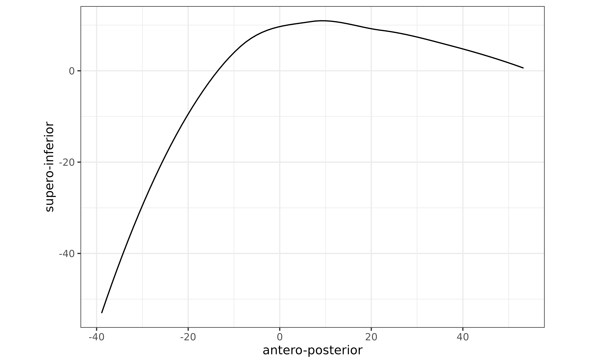

Import and plot spline data from AAA
Stefano Coretta
2020-12-28
Source:vignettes/tongue-imaging.Rmd
tongue-imaging.RmdThe package rticulate facilitates UTI data import and plotting with spline data exported from Articulate Assistant Advanced (AAA). To use the package, load it as usual.
Import spline data
The function read_aaa() can quickly import spline data and transform it into the long format (where each observation is a point on a fan line and the coordinates values are two variables, X and Y, see ?tongue for more details).
To correctly import AAA data, it is required that the file exported from AAA does not contain the header. This must be supplied as an argument to the read_aaa() function. We thus create a character vector with a concatenation of column names as strings.
columns <- c(
"speaker",
"seconds",
"rec_date",
"prompt",
"label",
"TT_displacement",
"TT_velocity",
"TT_abs_velocity",
"TD_displacement",
"TD_velocity",
"TD_abs_velocity"
)Now we can use read_aaa() to import the spline data as a tibble. The function requires a string with the file path and name, and a vector with the names of the columns.
# system.file() is needed here because the example files reside in the package.
# You can just include the file path directly in read_aaa, like
# read_aaa("~/Desktop/splines.tsv", columns)
file_path <- system.file("extdata", "it01.tsv", package = "rticulate")
tongue <- read_aaa(file_path, columns)##
## ── Column specification ────────────────────────────────────────────────────────
## cols(
## .default = col_double(),
## speaker = col_character(),
## rec_date = col_character(),
## prompt = col_character(),
## label = col_character()
## )
## ℹ Use `spec()` for the full column specifications.To check the head of the tibble, just do:
tongue## # A tibble: 462 x 15
## speaker seconds rec_date prompt label TT_displacement TT_velocity
## <chr> <dbl> <chr> <chr> <chr> <dbl> <dbl>
## 1 it01 1.20 29/11/2… Dico … max_… 77.9 -7.73
## 2 it01 1.20 29/11/2… Dico … max_… 77.9 -7.73
## 3 it01 1.20 29/11/2… Dico … max_… 77.9 -7.73
## 4 it01 1.20 29/11/2… Dico … max_… 77.9 -7.73
## 5 it01 1.20 29/11/2… Dico … max_… 77.9 -7.73
## 6 it01 1.20 29/11/2… Dico … max_… 77.9 -7.73
## 7 it01 1.20 29/11/2… Dico … max_… 77.9 -7.73
## 8 it01 1.20 29/11/2… Dico … max_… 77.9 -7.73
## 9 it01 1.20 29/11/2… Dico … max_… 77.9 -7.73
## 10 it01 1.20 29/11/2… Dico … max_… 77.9 -7.73
## # … with 452 more rows, and 8 more variables: TT_abs_velocity <dbl>,
## # TD_displacement <dbl>, TD_velocity <dbl>, TD_abs_velocity <dbl>,
## # fan_line <int>, X <dbl>, Y <dbl>, .index <int>Sometimes is useful to add extra information for each prompt (like vowel, consonant place, phonation, etc.). We can do so by using functions from the dplyr package (word() is from the stringr package).
stimuli <- read_csv(system.file("extdata", "stimuli.csv", package = "rticulate"))##
## ── Column specification ────────────────────────────────────────────────────────
## cols(
## item = col_double(),
## word = col_character(),
## ipa = col_character(),
## c1 = col_character(),
## c1_phonation = col_character(),
## vowel = col_character(),
## anteropost = col_character(),
## height = col_character(),
## c2 = col_character(),
## c2_phonation = col_character(),
## c2_place = col_character()
## )
tongue <- mutate(tongue, word = stringr::word(prompt, 2)) %>%
left_join(y = stimuli) %>%
mutate_if(is.character, as.factor)## Joining, by = "word"Let’s check tongue again.
tongue## # A tibble: 462 x 26
## speaker seconds rec_date prompt label TT_displacement TT_velocity
## <fct> <dbl> <fct> <fct> <fct> <dbl> <dbl>
## 1 it01 1.20 29/11/2… Dico … max_… 77.9 -7.73
## 2 it01 1.20 29/11/2… Dico … max_… 77.9 -7.73
## 3 it01 1.20 29/11/2… Dico … max_… 77.9 -7.73
## 4 it01 1.20 29/11/2… Dico … max_… 77.9 -7.73
## 5 it01 1.20 29/11/2… Dico … max_… 77.9 -7.73
## 6 it01 1.20 29/11/2… Dico … max_… 77.9 -7.73
## 7 it01 1.20 29/11/2… Dico … max_… 77.9 -7.73
## 8 it01 1.20 29/11/2… Dico … max_… 77.9 -7.73
## 9 it01 1.20 29/11/2… Dico … max_… 77.9 -7.73
## 10 it01 1.20 29/11/2… Dico … max_… 77.9 -7.73
## # … with 452 more rows, and 19 more variables: TT_abs_velocity <dbl>,
## # TD_displacement <dbl>, TD_velocity <dbl>, TD_abs_velocity <dbl>,
## # fan_line <int>, X <dbl>, Y <dbl>, .index <int>, word <fct>, item <dbl>,
## # ipa <fct>, c1 <fct>, c1_phonation <fct>, vowel <fct>, anteropost <fct>,
## # height <fct>, c2 <fct>, c2_phonation <fct>, c2_place <fct>Plot splines
To plot splines from a spline data frame, use plot_tongue(). This function is a wrapper of a ggplot call (from the ggplot2 package). The coordinates must be in two variables named X and Y. read_aaa() creates them automatically while importing the raw data.
plot_tongue(tongue)## `geom_smooth()` using formula 'y ~ x'
You can also easily filter the tibble with the filter() function from dplyr.
filter(tongue, label == "max_TD") %>%
plot_tongue()## `geom_smooth()` using formula 'y ~ x'
You can specify geom options and aesthetics in the usual ggplot way (remember to load the package with library(ggplot2) if you need this). geom options are arguments of plot_tongue(), while aesthetics can be called with aes().
plot_tongue(tongue, alpha = 0.5) +
aes(group = rec_date, colour = c2_place) +
theme(legend.position = "bottom")## `geom_smooth()` using formula 'y ~ x'
To plot points instead of splines, use plot_tongue(geom = "point").
plot_tongue(tongue, geom = "point", alpha = 0.5) +
aes(group = rec_date, colour = c2_place) +
theme(legend.position = "bottom")
Finally, if you want to plot the palate profile, you can do so by specifying a data frame with the coordinates for the palate spline.
palate <- read_aaa(system.file("extdata", "it01-palate.tsv", package = "rticulate"), columns)##
## ── Column specification ────────────────────────────────────────────────────────
## cols(
## .default = col_double(),
## speaker = col_character(),
## rec_date = col_character(),
## prompt = col_character(),
## label = col_logical(),
## X_1 = col_logical(),
## Y_1 = col_logical(),
## X_2 = col_logical(),
## Y_2 = col_logical(),
## X_3 = col_logical(),
## Y_3 = col_logical(),
## X_4 = col_logical(),
## Y_4 = col_logical(),
## X_5 = col_logical(),
## Y_5 = col_logical(),
## X_6 = col_logical(),
## Y_6 = col_logical(),
## X_7 = col_logical(),
## Y_7 = col_logical(),
## X_8 = col_logical(),
## Y_8 = col_logical()
## # ... with 20 more columns
## )
## ℹ Use `spec()` for the full column specifications.
filter(tongue, label == "max_TD") %>%
plot_tongue(palate = palate, alpha = 0.5) + aes(group = rec_date)## `geom_smooth()` using formula 'y ~ x'## `geom_smooth()` using formula 'y ~ x'## Warning: Removed 18 rows containing non-finite values (stat_smooth).
Import multiple files
To import multiple files with AAA data, simply use a list of paths with read_aaa, for example using list.files.
tongue2 <- list.files(
path = system.file("extdata", package = "rticulate"),
pattern = "*\\d.tsv",
full.names = TRUE
) %>%
read_aaa(., columns)##
## ── Column specification ────────────────────────────────────────────────────────
## cols(
## .default = col_double(),
## speaker = col_character(),
## rec_date = col_character(),
## prompt = col_character(),
## label = col_character()
## )
## ℹ Use `spec()` for the full column specifications.
##
##
## ── Column specification ────────────────────────────────────────────────────────
## cols(
## .default = col_double(),
## speaker = col_character(),
## rec_date = col_character(),
## prompt = col_character(),
## label = col_character()
## )
## ℹ Use `spec()` for the full column specifications.We can now plot splines for both speakers.
plot_tongue(tongue2, alpha = 0.5) +
aes(group = rec_date) +
facet_grid(. ~ speaker)## `geom_smooth()` using formula 'y ~ x'